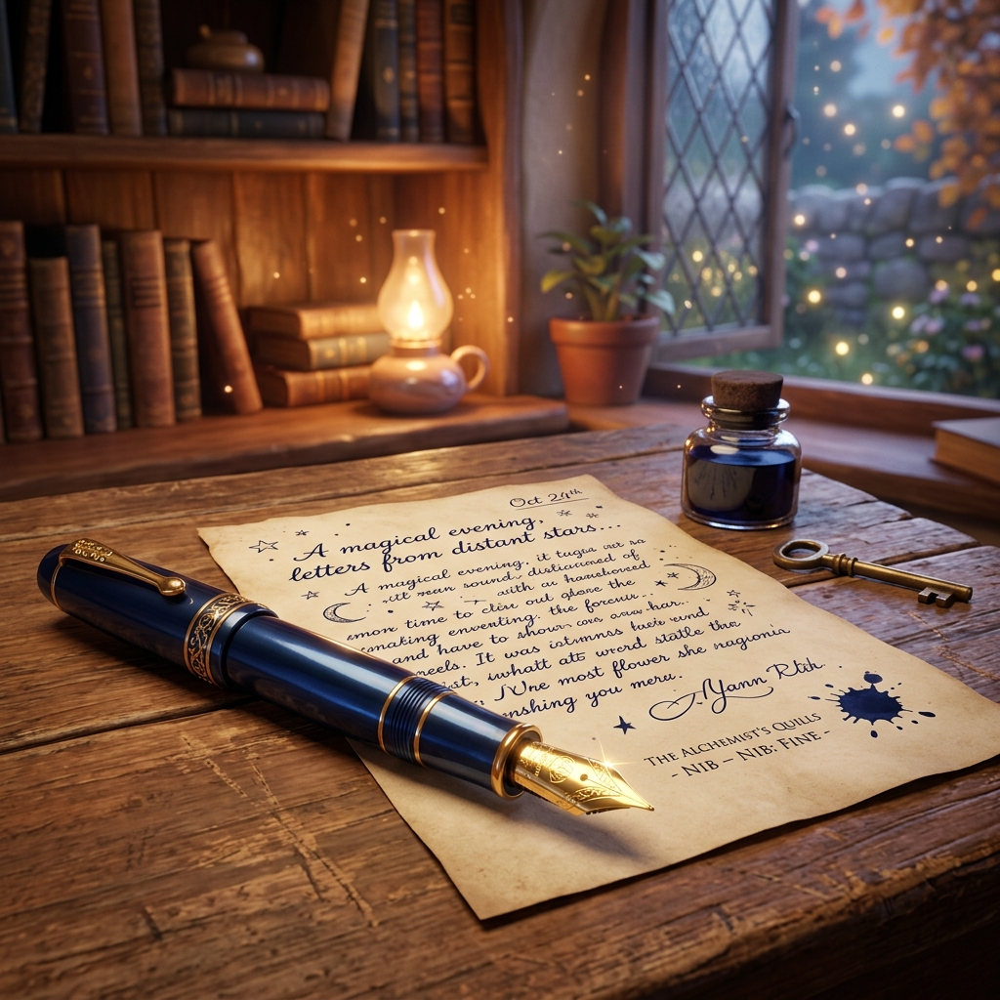
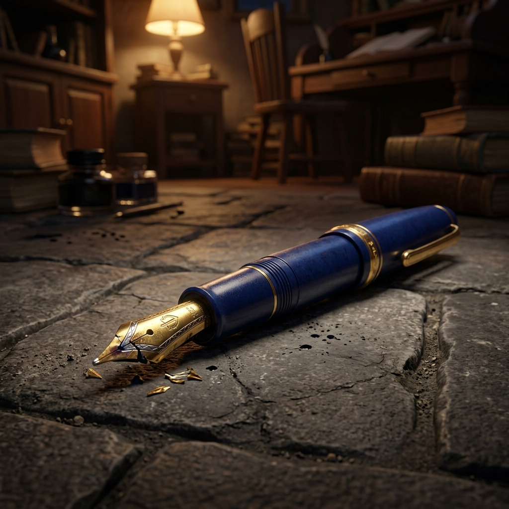

The Magic Inside the Nib
Nine-year-old Arjun sat at his wooden desk in the classroom, his fingers wrapped around a sleek, midnight-blue fountain pen. It was his most prized possession—a gift from his grandfather. Arjun was convinced the pen was magic. Every time he used it, his handwriting looked like a row of perfect pearls on the paper. "It’s the pen," he would whisper to himself. "The pen does all the work."
One afternoon, while Arjun was carefully copying a poem from the blackboard, his elbow caught the edge of his desk. Clack.
The pen tumbled through the air and struck the hard stone floor. Arjun gasped and scrambled to pick it up. His heart sank when he saw the tip. The metal nib was twisted and snapped. In that moment, Arjun felt his talent break, too. For the rest of the day, he sat in silence, convinced that his days of beautiful writing were over.

The Heavy Heart
When Arjun reached home, he didn't run to the kitchen for snacks. He sat on the porch, his face dull and his eyes fixed on his shoes. His grandfather, noticing the heavy cloud over his grandson, sat down beside him.
"What happened, my little poet?" his grandfather asked gently. "Why is your face so dull today?"
"The pen you gave me... it fell," Arjun said, his voice trembling. "The nib is broken. My handwriting is ruined forever, Grandpa. I’ll never write beautifully again because the magic is gone."

The Grandfather's Secret
To Arjun’s surprise, his grandfather let out a warm, belly laugh. He didn't say a word. Instead, he went into the house, took Arjun’s bag, and pulled out the broken pen.
He reached into an old desk drawer and found a dusty, unused pen from years ago. With steady hands, he unscrewed the broken nib and replaced it with a plain, ordinary one. He handed the pen back to Arjun and placed a fresh sheet of paper in front of him.
"Write," Grandpa commanded with a smile.
Arjun sighed, certain it would look terrible. But as he touched the paper, the letters appeared just as elegant and perfect as they had before. He stared at the "new" nib—it was a completely different shape, yet the writing was the same.
The Realization
"But... how?" Arjun stammered.
Grandfather placed a hand on Arjun’s shoulder. "The pen is just metal and plastic, Arjun. It was your hand that knew the curves, and your mind that guided the ink. The magic wasn't in the nib; the magic was always in you."